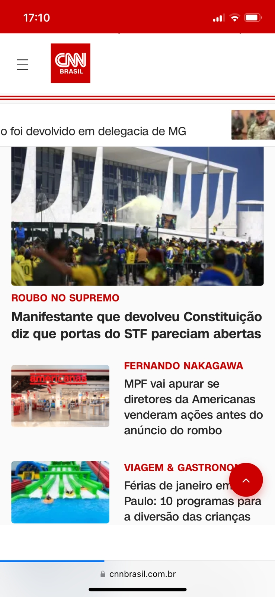
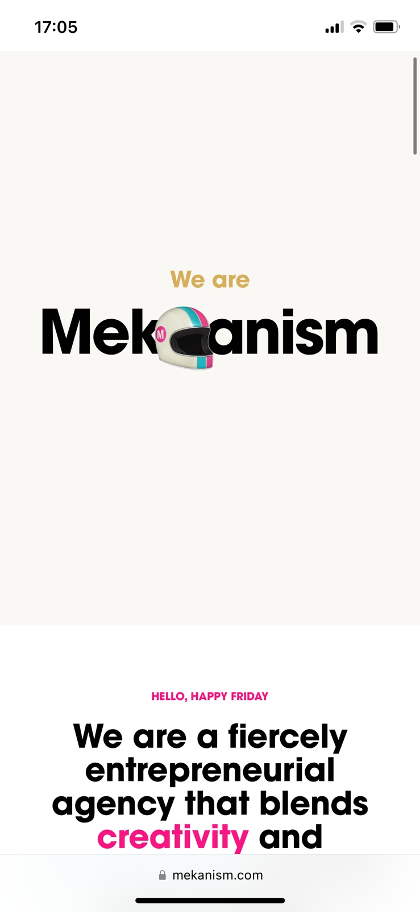

Week 3 Assignment
João Filipe
João Filipe
-

Hierarchy
Company name:CNN
CNNI like to see that page because the main article is
the largest box.
That article is the one they want to emphasize. -

Contrast
Company name:Mekanism
MekanismI see the contrast between the colors
and the elements of the page caught my attention. -
White space
Company name:Neon Bank
Neon BankI see a good amount of white space(it's actually orange).
But I feel it's a very clean page and without many options
to make the users confused. they ask you right away to enter your info.